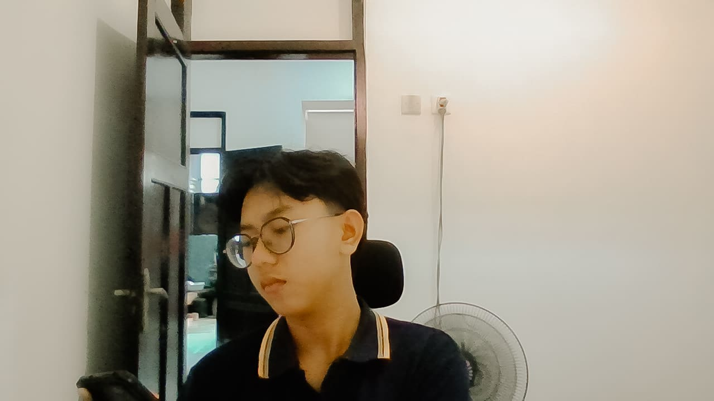

Web Developer & Freelance Multimedia
Portofolio Krisna Arya
Freelance Web Developer & Bekerja di Bidang Multimedia Desain Grafis, Editor, VIdeografer & Fotografer.
Profil Singkat & Latar Belakang
Tentang Saya

Bekerja di Bidang Multimedia dan Web Developer
Saya adalah mahasiswa D4 Teknologi Rekayasa Perangkat Lunak (TRPL) yang berbasis di Bali. Berdedikasi dalam merancang antarmuka web yang bersih, intuitif, serta fungsional.
- Nama: Komang Krisna Arya Adi Putra
- Program Studi: TRPL
- Lokasi: Bali, Indonesia
- Status: Mahasiswa Aktif